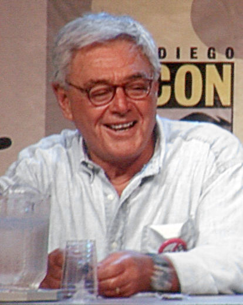

El director
Richard Donner
Biografia
Richard Donner (nacido Richard Donald Schwartzberg; Nueva York, 24 de abril de 1930) es un veterano director y productor cinematográfico estadounidense.
Realizador de producciones de diversos géneros como la película de terror La profecía (The Omen), las cuatro entregas de la saga Lethal Weapon (Arma letal/Arma mortal), la película de culto juvenil del género de aventura Los Goonies, y por haber sido el encargado de la realización de la primera adaptación del Superhéroe Superman a la pantalla grande Superman: la película, protagonizada por Christopher Reeve y Marlon Brando, entre otros proyectos.
Donner también era el encargado de realizar la secuela Superman II, pero fue reemplazado por Richard Lester a mitad de la producción. Sin embargo Donner, sí terminó realizando su propia versión de Superman II titulada Superman II: The Richard Donner Cut, lanzada en el año 2006.
Carrera
Junto con su esposa, Lauren Shuler Donner, es propietario de la productora The Donner's Company. Después de la película de terror La profecía en 1976, Donner dirigió Superman (1978), protagonizada por Christopher Reeve. La influencia de esta película ayudó a establecer el concepto de superhéroes como un género cinematográfico respetado.
En 2000, recibió el premio del Presidente de la Academia de Ciencia Ficción, Fantasía y Películas de Terror. También fue nominado al Mejor Director en 1978 por Superman.
Es además uno de los escritores del cómic El último hijo de Krypton, donde llama Christopher al hijo del General Zod, en honor a Christopher Reeve.